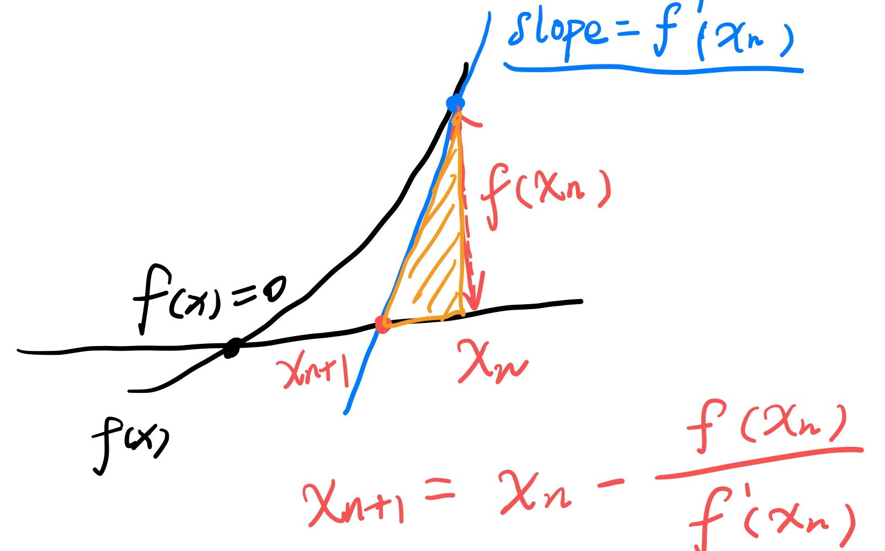
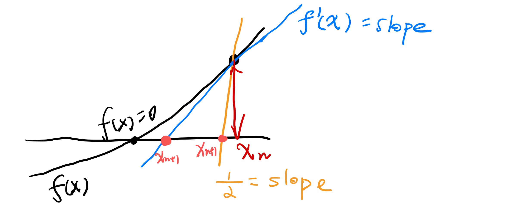
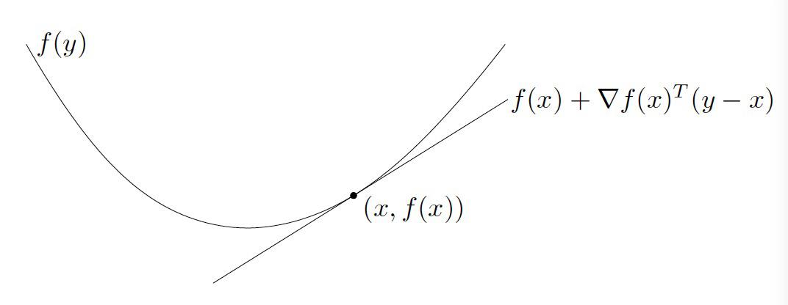

写在前面：
所有向量如不加描述均视为列向量
数据集为m个数据，n个特征，第i个数据表示为：( x ( i ) , y ( i ) ) (x^{(i)}, y^{(i)}) ( x ( i ) , y ( i ) )
A computer program is said to learn from experience E with respect to some class of tasks T and performance measure P, if its performance at tasks in T, as measured by P, improves with experience E.
Hypothesis: h θ ( x ) = X θ h_{\theta}(x)=X{\theta} h θ ( x ) = X θ x 0 ( i ) = 1 x_0^{(i)}=1 x 0 ( i ) = 1 Cost Function: J ( θ ) = 1 2 ∑ i = 1 m ( h θ ( x ( i ) ) − y ( i ) ) 2 = 1 2 ( X θ − Y ) T ( X θ − Y ) J(\theta)=\frac{1}{2}\sum_{i=1}^{m} (h_{\theta}(x^{(i)})-y^{(i)})^2=\frac{1}{2}(X\theta-Y)^T(X\theta-Y) J ( θ ) = 2 1 ∑ i = 1 m ( h θ ( x ( i ) ) − y ( i ) ) 2 = 2 1 ( X θ − Y ) T ( X θ − Y ) Derivatives: ∇ J ( θ ) = ∑ i = 1 m ( h θ ( x ( i ) ) − y ( i ) ) x ( i ) = X T X θ − X T y \nabla J(\theta) = \sum_{i=1}^{m}(h_{\theta}(x^{(i)})-y^{(i)})x^{(i)}= X^TX\theta-X^Ty ∇ J ( θ ) = ∑ i = 1 m ( h θ ( x ( i ) ) − y ( i ) ) x ( i ) = X T X θ − X T y Objective: m i n θ J ( θ ) \mathop{min}\limits_{\theta} J(\theta) θ min J ( θ )
寻找最小值m i n θ J ( θ ) \mathop{min}\limits_{\theta} J(\theta) θ min J ( θ ) ∇ J ( θ ) = 0 \nabla J(\theta)=0 ∇ J ( θ ) = 0
1 2 3 4 repeat: 计算J(θ)梯度J' θ = θ - α*J' until convergence criterion
Convergence Criterion: ∥ ∇ J ( θ ) ∥ 2 ≤ ϵ \left\| \nabla J(\theta) \right\|_2 \le \epsilon ∥ ∇ J ( θ ) ∥ 2 ≤ ϵ
对应的梯度上升算法(Gradient Ascent): 用于最大化maximize
θ j = θ j + α ∂ J ( θ ) ∂ θ j \theta_j=\theta_j + \alpha \frac{\partial J(\theta)}{\partial \theta_j} θ j = θ j + α ∂ θ j ∂ J ( θ )
随机梯度下降(SGD)
每次随机打散数据
更新θ i \theta_i θ i J ( θ ) J(\theta) J ( θ )
n × n n \times n n × n t r M = ∑ i = 1 n M i i trM = \sum_{i=1}{n}M_{ii} t r M = ∑ i = 1 n M i i
n × n n \times n n × n
t r A B C D = t r D A B C = t r C D A B = t r B C D A \mathop{tr}ABCD = \mathop{tr}DABC = \mathop{tr}CDAB = \mathop{tr}BCDA t r A B C D = t r D A B C = t r C D A B = t r B C D A 非梯度类
t r A = t r A T \mathop{tr}A = \mathop{tr}A^T t r A = t r A T t r ( A + B ) = t r A + t r B \mathop{tr}(A+B) = \mathop{tr}A + \mathop{tr}B t r ( A + B ) = t r A + t r B t r a A = a t r A \mathop{tr}aA = a\mathop{tr}A t r a A = a t r A ∇ A T f ( A ) = ( ∇ A f ( A ) ) T \nabla_{A^T}f(A)=(\nabla_A f(A))^T ∇ A T f ( A ) = ( ∇ A f ( A ) ) T
含梯度类
∇ A t r A B = B T \nabla_A \mathop{tr}AB = B^T ∇ A t r A B = B T ∇ A ∣ A ∣ = ∣ A ∣ ( A − 1 ) T \nabla_A|A| = |A|(A^{-1})^T ∇ A ∣ A ∣ = ∣ A ∣ ( A − 1 ) T ∇ A A B A T C = C A B + C T A B T \nabla_{A}ABA^TC = CAB + C^TAB^T ∇ A A B A T C = C A B + C T A B T
与上式转置关系：∇ A T A B A T C = B T A T C T + B A T C \nabla_{A^T}ABA^TC = B^TA^TC^T + BA^TC ∇ A T A B A T C = B T A T C T + B A T C
∇ θ J ( θ ) = ∇ θ 1 2 ( X θ − Y ) T ( X θ − Y ) = ∇ θ 1 2 t r ( θ T X T X θ − θ T X T Y − Y T X θ + Y T Y ) = ∇ θ 1 2 [ t r ( θ T X T X θ ) − t r ( θ T X T Y + Y T X θ ) ] = ∇ θ 1 2 t r ( θ T X T X θ ) − X T Y = X T X θ − X T Y \begin{aligned}\nabla_{\theta} J(\theta) &= \nabla_{\theta} \frac{1}{2}(X\theta-Y)^T(X\theta-Y)\\
&= \nabla_{\theta} \frac{1}{2}\mathop{tr}(\theta^TX^TX\theta - \theta^TX^TY - Y^TX\theta + Y^TY)\\
&= \nabla_{\theta} \frac{1}{2} [\mathop{tr}(\theta^TX^TX\theta) - \mathop{tr}(\theta^TX^TY + Y^TX\theta)]\\
&= \nabla_{\theta} \frac{1}{2} \mathop{tr}(\theta^TX^TX\theta) - X^TY\\
&= X^TX\theta - X^TY
\end{aligned}
∇ θ J ( θ ) = ∇ θ 2 1 ( X θ − Y ) T ( X θ − Y ) = ∇ θ 2 1 t r ( θ T X T X θ − θ T X T Y − Y T X θ + Y T Y ) = ∇ θ 2 1 [ t r ( θ T X T X θ ) − t r ( θ T X T Y + Y T X θ ) ] = ∇ θ 2 1 t r ( θ T X T X θ ) − X T Y = X T X θ − X T Y
因为实数即为1 × 1 1 \times 1 1 × 1
3->4：利用公式
t r A = t r A T \mathop{tr}A=\mathop{tr}A^T t r A = t r A T t r A B C D = t r D A B C = t r C D A B = t r B C D A \mathop{tr}ABCD = \mathop{tr}DABC = \mathop{tr}CDAB = \mathop{tr}BCDA t r A B C D = t r D A B C = t r C D A B = t r B C D A ∇ A t r A B = B T \nabla_A \mathop{tr}AB = B^T ∇ A t r A B = B T
4->5：利用公式
∇ A T A B A T C = B T A T C T + B A T C \nabla_{A^T}ABA^TC = B^TA^TC^T + BA^TC ∇ A T A B A T C = B T A T C T + B A T C
由上述梯度公式，并求解∇ J ( θ ) = 0 \nabla J(\theta)=0 ∇ J ( θ ) = 0
θ = ( X T X ) − 1 X T Y \theta = (X^TX)^{-1}X^TY
θ = ( X T X ) − 1 X T Y
sigmoid : g ( z ) = 1 1 + e − z g(z)=\frac{1}{1+e^{-z}} g ( z ) = 1 + e − z 1
bound: g ( z ) ∈ ( 0 , 1 ) g(z) \in (0,1) g ( z ) ∈ ( 0 , 1 )
symmetric: g ( − z ) = 1 − g ( z ) g(-z)=1-g(z) g ( − z ) = 1 − g ( z )
gradient: g ′ ( z ) = g ( z ) ( 1 − g ( z ) ) g'(z) = g(z)(1-g(z)) g ′ ( z ) = g ( z ) ( 1 − g ( z ) )
hypothesis : h θ ( x ) = g ( θ T x ) h_{\theta}(x) = g(\theta^Tx) h θ ( x ) = g ( θ T x ) cost function(MLE) : l ( θ ) = ∑ i = 1 m ( y ( i ) l o g h θ ( x ( i ) ) + ( 1 − y ( i ) ) l o g ( 1 − h θ ( x ( i ) ) ) l(\theta)=\sum_{i=1}^m (y^{(i)}\mathop{log} h_{\theta}(x^{(i)})+(1-y^{(i)})\mathop{log}(1-h_{\theta}(x^{(i)})) l ( θ ) = ∑ i = 1 m ( y ( i ) l o g h θ ( x ( i ) ) + ( 1 − y ( i ) ) l o g ( 1 − h θ ( x ( i ) ) ) Objective: m a x θ l ( θ ) \mathop{max}\limits_{\theta} l(\theta) θ ma x l ( θ )
注意此处是最大化，使用梯度上升
若对cost function增加负号，即为最小化，使用梯度下降
h θ ( x ) h_{\theta}(x) h θ ( x ) p ( y ∣ x ; θ ) = p ( Y = y ∣ X = x ; θ ) p(y|x;\theta)=p(Y=y|X=x;\theta) p ( y ∣ x ; θ ) = p ( Y = y ∣ X = x ; θ )
1: p ( Y = 1 ∣ X = x ; θ ) = h θ ( x ) = g ( θ T x ) p(Y=1|X=x;\theta)=h_{\theta}(x)=g(\theta^T x) p ( Y = 1 ∣ X = x ; θ ) = h θ ( x ) = g ( θ T x )
0： p ( Y = 0 ∣ X = x ; θ ) = 1 − h θ ( x ) = g ( − θ T x ) p(Y=0|X=x;\theta)=1-h_{\theta}(x)=g(-\theta^Tx) p ( Y = 0 ∣ X = x ; θ ) = 1 − h θ ( x ) = g ( − θ T x )
综上，p ( y ∣ x ; θ ) = ( h θ ( x ) ) y ( 1 − h θ ( x ) ) ( 1 − y ) p(y|x;\theta)=(h_{\theta}(x))^y (1-h_{\theta}(x))^{(1-y)} p ( y ∣ x ; θ ) = ( h θ ( x ) ) y ( 1 − h θ ( x ) ) ( 1 − y )
y ∈ { 0 , 1 } y\in\{0,1\} y ∈ { 0 , 1 }
L ( θ ) = ∏ i = 1 m ( h θ ( x ) ) y ( i ) ( 1 − h θ ( x ) ) ( 1 − y ( i ) ) L(\theta) = \prod_{i=1}^m (h_{\theta}(x))^{y^{(i)}} (1-h_{\theta}(x))^{(1-y^{(i)})}
L ( θ ) = i = 1 ∏ m ( h θ ( x ) ) y ( i ) ( 1 − h θ ( x ) ) ( 1 − y ( i ) )
l ( θ ) = l o g L ( θ ) = ∑ i = 1 m ( y ( i ) l o g h θ ( x ( i ) ) + ( 1 − y ( i ) ) l o g ( 1 − h θ ( x ( i ) ) ) l(\theta) = \mathop{log}L(\theta) = \sum_{i=1}^m \big(y^{(i)}\mathop{log} h_{\theta}(x^{(i)})+(1-y^{(i)})\mathop{log}(1-h_{\theta}(x^{(i)}) \big)
l ( θ ) = l o g L ( θ ) = i = 1 ∑ m ( y ( i ) l o g h θ ( x ( i ) ) + ( 1 − y ( i ) ) l o g ( 1 − h θ ( x ( i ) ) )
∂ l ( θ ) ∂ θ = ∑ i = 1 m ( y ( i ) − h θ ( x ( i ) ) ) x ( i ) \frac{\partial l(\theta)}{\partial\theta} = \sum_{i=1}^{m} (y^{(i)}-h_{\theta}(x^{(i)}))x^{(i)}
∂ θ ∂ l ( θ ) = i = 1 ∑ m ( y ( i ) − h θ ( x ( i ) ) ) x ( i )
使用梯度上升求解：θ = θ + α ∂ l ( θ ) ∂ θ \theta = \theta + \alpha\frac{\partial l(\theta)}{\partial\theta} θ = θ + α ∂ θ ∂ l ( θ )
设定y ∈ { − 1 , 1 } y\in\{-1,1\} y ∈ { − 1 , 1 }
p ( y ∣ x ; θ ) = 1 1 + e x p ( − y θ T x ) p(y|x;\theta)=\frac{1}{1+exp(-y\theta^Tx)}
p ( y ∣ x ; θ ) = 1 + e x p ( − y θ T x ) 1
新似然函数：
L ( θ ) = ∏ i = 1 m 1 1 + e x p ( − y ( i ) θ T x ) L(\theta) = \prod_{i=1}^m \frac{1}{1+exp(-y^{(i)}\theta^Tx)}
L ( θ ) = i = 1 ∏ m 1 + e x p ( − y ( i ) θ T x ) 1
取对数：
l ( θ ) = − ∑ i = 1 m l o g ( 1 + e x p ( − y ( i ) θ T x ) ) l(\theta) = -\sum_{i=1}^m \mathop{log}\big(1+exp(-y^{(i)}\theta^Tx)\big)
l ( θ ) = − i = 1 ∑ m l o g ( 1 + e x p ( − y ( i ) θ T x ) )
MLE估计值为：
θ M L E = a r g m a x θ − ∑ i = 1 m l o g ( 1 + e x p ( − y ( i ) θ T x ) ) = a r g m i n θ ∑ i = 1 m l o g ( 1 + e x p ( − y ( i ) θ T x ) ) \begin{aligned}\theta_{MLE} &= arg\mathop{max}\limits_{\theta} -\sum_{i=1}^m \mathop{log}\big(1+exp(-y^{(i)}\theta^Tx)\big)\\
&= arg\mathop{min}\limits_{\theta} \sum_{i=1}^m \mathop{log}\big(1+exp(-y^{(i)}\theta^Tx)\big)
\end{aligned}
θ M L E = a r g θ ma x − i = 1 ∑ m l o g ( 1 + e x p ( − y ( i ) θ T x ) ) = a r g θ min i = 1 ∑ m l o g ( 1 + e x p ( − y ( i ) θ T x ) )
牛顿法目标：求解f ( x ) = 0 f(x)=0 f ( x ) = 0

基本公式：x 2 = x 1 − f ( x 1 ) f ′ ( x 1 ) x_2 = x_1 - \frac{f(x_1)}{f'(x_1)} x 2 = x 1 − f ′ ( x 1 ) f ( x 1 )
在LR模型中的最优化，目标是找到f ′ ( x ) = 0 f'(x)=0 f ′ ( x ) = 0
转换公式为x 2 = x 1 − f ′ ( x 1 ) f ′ ′ ( x 1 ) x_2 = x_1 - \frac{f'(x_1)}{f''(x_1)} x 2 = x 1 − f ′ ′ ( x 1 ) f ′ ( x 1 )
θ = θ − H − 1 ∇ θ l ( θ ) \theta = \theta - H^{-1}\nabla_{\theta}l(\theta) θ = θ − H − 1 ∇ θ l ( θ ) H H H
牛顿法与梯度下降的对比： α \alpha α 1 f ′ ( x ) \frac{1}{f'(x)} f ′ ( x ) 1 f ( x ) = 0 f(x)=0 f ( x ) = 0 1 α \frac{1}{\alpha} α 1 f ′ ( x ) f'(x) f ′ ( x )

显然，在同一点，梯度下降法每次都是同样slope(1 α \frac{1}{\alpha} α 1 f ′ ( x ) f'(x) f ′ ( x ) x n x_n x n α \alpha α
思想：
将第k类赋值y ( k ) = 1 y^{(k)}=1 y ( k ) = 1 f k ( x ) f_k(x) f k ( x )
对每一个分类器求f k ( x ) f_k(x) f k ( x )
思想：
两两之间训练分类器，共k ( k − 1 ) 2 \frac{k(k-1)}{2} 2 k ( k − 1 )
对每个分类器求值，取最大值作为分类结果
为解决overfitting的问题，引入正则化Regularization
在Cost Function中加入一个正则化项(惩罚项)
正则化项(惩罚项)的λ \lambda λ
Cost Function形式：
J ( θ ) = 1 2 m ∑ i = 1 m ( h θ ( x ( i ) ) − y ( i ) ) 2 + λ 2 m ∑ j = 1 n θ j 2 J(\theta) = \frac{1}{2m} \sum_{i=1}^m\big(h_{\theta}(x^{(i)})-y^{(i)}\big)^2 + \frac{\lambda}{2m} \sum_{j=1}^n\theta_j^2
J ( θ ) = 2 m 1 i = 1 ∑ m ( h θ ( x ( i ) ) − y ( i ) ) 2 + 2 m λ j = 1 ∑ n θ j 2
Gradient Descent梯度下降：
θ 0 = θ 0 − α 1 m ∑ i = 1 m ( h θ ( x ( i ) ) − y ( i ) ) x 0 ( i ) θ j = θ j − α [ 1 m ∑ i = 1 m ( h θ ( x ( i ) ) − y ( i ) ) x j ( i ) + λ m θ j ] \begin{aligned}&\theta_0 = \theta_0 - \alpha\frac{1}{m}\sum_{i=1}^{m}(h_{\theta}(x^{(i)})-y^{(i)})x_0^{(i)} \\
&\theta_j = \theta_j - \alpha\big[\frac{1}{m}\sum_{i=1}^{m}(h_{\theta}(x^{(i)})-y^{(i)})x_j^{(i)} + \frac{\lambda}{m}\theta_j\big]
\end{aligned} θ 0 = θ 0 − α m 1 i = 1 ∑ m ( h θ ( x ( i ) ) − y ( i ) ) x 0 ( i ) θ j = θ j − α [ m 1 i = 1 ∑ m ( h θ ( x ( i ) ) − y ( i ) ) x j ( i ) + m λ θ j ]
θ 0 \theta_0 θ 0
Normal Equation正规方程：
θ = ( X T X + λ L ) − 1 X T y \theta = (X^TX+\lambda L)^{-1}X^Ty
θ = ( X T X + λ L ) − 1 X T y
其中，
L = [ 0 1 ⋱ 1 ] L = \begin{bmatrix}0&&&\\&1&&\\&&\ddots&\\&&&1\end{bmatrix}
L = ⎣ ⎢ ⎢ ⎡ 0 1 ⋱ 1 ⎦ ⎥ ⎥ ⎤
证明：
Cost Function形式(此处对MLE结果增加负号以使用梯度下降)：
l ( θ ) = − 1 m ∑ i = 1 m ( y ( i ) l o g h θ ( x ( i ) ) + ( 1 − y ( i ) ) l o g ( 1 − h θ ( x ( i ) ) ) + λ 2 m ∑ j = 1 n θ j 2 l(\theta)=-\frac{1}{m}\sum_{i=1}^m (y^{(i)}\mathop{log} h_{\theta}(x^{(i)})+(1-y^{(i)})\mathop{log}(1-h_{\theta}(x^{(i)})) + \frac{\lambda}{2m}\sum_{j=1}^n\theta_j^2
l ( θ ) = − m 1 i = 1 ∑ m ( y ( i ) l o g h θ ( x ( i ) ) + ( 1 − y ( i ) ) l o g ( 1 − h θ ( x ( i ) ) ) + 2 m λ j = 1 ∑ n θ j 2
对求和符号前常数系数的说明：是否有2、是否有m，只是为求导的方便增加，不改变结果和形式的本质
Gradient Descent梯度下降(与线性回归的公式相同)：
θ 0 = θ 0 − α 1 m ∑ i = 1 m ( h θ ( x ( i ) ) − y ( i ) ) x 0 ( i ) θ j = θ j − α [ 1 m ∑ i = 1 m ( h θ ( x ( i ) ) − y ( i ) ) x j ( i ) + λ m θ j ] \begin{aligned}&\theta_0 = \theta_0 - \alpha\frac{1}{m}\sum_{i=1}^{m}(h_{\theta}(x^{(i)})-y^{(i)})x_0^{(i)} \\
&\theta_j = \theta_j - \alpha\big[\frac{1}{m}\sum_{i=1}^{m}(h_{\theta}(x^{(i)})-y^{(i)})x_j^{(i)} + \frac{\lambda}{m}\theta_j\big]
\end{aligned} θ 0 = θ 0 − α m 1 i = 1 ∑ m ( h θ ( x ( i ) ) − y ( i ) ) x 0 ( i ) θ j = θ j − α [ m 1 i = 1 ∑ m ( h θ ( x ( i ) ) − y ( i ) ) x j ( i ) + m λ θ j ]
MLE：最大似然估计 -数据D未发生估计θ \theta θ
频率学派
p ( D ; θ ) p(D;\theta) p ( D ; θ ) θ \theta θ
L ( θ ) = p ( D ; θ ) = ∏ i = 1 m p ( d ( i ) ; θ ) L(\theta)=p(D;\theta) = \prod_{i=1}^m p(d^{(i)}; \theta) L ( θ ) = p ( D ; θ ) = ∏ i = 1 m p ( d ( i ) ; θ ) l ( θ ) = l o g p ( D ; θ ) = ∑ i = 1 m l o g p ( d ( i ) ; θ ) l(\theta)=\mathop{log} p(D;\theta) = \sum_{i=1}^m \mathop{log}p(d^{(i)}; \theta) l ( θ ) = l o g p ( D ; θ ) = ∑ i = 1 m l o g p ( d ( i ) ; θ )
MAP：最大后验估计 -数据D已发生估计θ \theta θ
概率学派
p ( θ ∣ D ) p(\theta|D) p ( θ ∣ D ) θ \theta θ
p ( θ ∣ D ) = p ( θ ) p ( D ∣ θ ) p ( D ) p(\theta|D) = \frac{p(\theta)p(D|\theta)}{p(D)} p ( θ ∣ D ) = p ( D ) p ( θ ) p ( D ∣ θ ) p ( θ ∣ D ) ∝ p ( θ ) p ( D ∣ θ ) p(\theta|D)\propto p(\theta)p(D|\theta) p ( θ ∣ D ) ∝ p ( θ ) p ( D ∣ θ )
将MLE与MAP求出的公式看作cost function
高斯分布：
X ∼ N ( μ , σ 2 ) f ( x ) = 1 2 π σ 2 e − ( x − μ ) 2 2 σ 2 X\sim N(\mu,\sigma^2)\\
f(x) = \frac{1}{\sqrt{2\pi\sigma^2}}\mathop{e}^{-\frac{(x-\mu)^2}{2\sigma^2}}
X ∼ N ( μ , σ 2 ) f ( x ) = 2 π σ 2 1 e − 2 σ 2 ( x − μ ) 2
关于似然函数l ( θ ) = p ( D ; θ ) l(\theta)=p(D;\theta) l ( θ ) = p ( D ; θ )
p ( D ) p(D) p ( D ) θ \theta θ 由于模型的假设和前提不同，对于p ( D ) p(D) p ( D )
在MLE/MAP中：p ( D ) = p ( y ∣ x ) p(D)=p(y|x) p ( D ) = p ( y ∣ x )
在naive bayes中p ( D ) = p ( x , y ) p(D)=p(x,y) p ( D ) = p ( x , y )
在naive bayes中目标也是求p ( D ) = p ( y ∣ x ) p(D)=p(y|x) p ( D ) = p ( y ∣ x ) p ( D ) = p ( x , y ) p(D)=p(x,y) p ( D ) = p ( x , y )
因此目标变成p ( D ) = p ( x , y ) p(D)=p(x,y) p ( D ) = p ( x , y ) p ( D ) = p ( y ∣ x ) p(D)=p(y|x) p ( D ) = p ( y ∣ x )
θ M L E = a r g m a x θ l ( θ ) = a r g m a x θ ∑ i = 1 m l o g p ( d ( i ) ; θ ) \begin{aligned}\theta_{MLE} &= arg\mathop{max}\limits_{\theta} l(\theta)\\
&= arg\mathop{max}\limits_{\theta} \sum_{i=1}^m \mathop{log} p(d^{(i)}; \theta)
\end{aligned}
θ M L E = a r g θ ma x l ( θ ) = a r g θ ma x i = 1 ∑ m l o g p ( d ( i ) ; θ )
假设服从分布：y ( i ) ∣ x ( i ) ∼ N ( θ T x , σ 2 ) y^{(i)}|x^{(i)} \sim N(\theta^Tx, \sigma^2) y ( i ) ∣ x ( i ) ∼ N ( θ T x , σ 2 )
p ( d ( i ) ; θ ) = p ( y ( i ) ∣ x ( i ) ; θ ) = 1 2 π σ 2 e − ( y ( i ) − θ T x ) 2 2 σ 2 \begin{aligned}p(d^{(i)};\theta) &= p(y^{(i)}|x^{(i)};\theta)\\
&= \frac{1}{\sqrt{2\pi\sigma^2}}\mathop{e}^{-\frac{(y^{(i)}-\theta^Tx)^2}{2\sigma^2}}
\end{aligned}
p ( d ( i ) ; θ ) = p ( y ( i ) ∣ x ( i ) ; θ ) = 2 π σ 2 1 e − 2 σ 2 ( y ( i ) − θ T x ) 2
求解：
l ( θ ) = ∑ i = 1 m l o g p ( d ( i ) ; θ ) = ∑ i = 1 m l o g 1 2 π σ 2 e − ( y ( i ) − θ T x ) 2 2 σ 2 = m l o g 1 2 π σ 2 + ∑ i = 1 m − ( y ( i ) − θ T x ) 2 2 σ 2 \begin{aligned}l(\theta) &= \sum_{i=1}^m \mathop{log} p(d^{(i)};\theta)\\
&= \sum_{i=1}^m \mathop{log} \frac{1}{\sqrt{2\pi\sigma^2}}\mathop{e}^{-\frac{(y^{(i)}-\theta^Tx)^2}{2\sigma^2}}\\
&= m\mathop{log}\frac{1}{\sqrt{2\pi\sigma^2}} + \sum_{i=1}^m -\frac{(y^{(i)}-\theta^Tx)^2}{2\sigma^2}
\end{aligned}
l ( θ ) = i = 1 ∑ m l o g p ( d ( i ) ; θ ) = i = 1 ∑ m l o g 2 π σ 2 1 e − 2 σ 2 ( y ( i ) − θ T x ) 2 = m l o g 2 π σ 2 1 + i = 1 ∑ m − 2 σ 2 ( y ( i ) − θ T x ) 2
由上式得到目标：
m a x θ m l o g 1 2 π σ 2 + ∑ i = 1 m − ( y ( i ) − θ T x ) 2 2 σ 2 m a x θ ∑ i = 1 m − ( y ( i ) − θ T x ) 2 2 σ 2 m a x θ − ∑ i = 1 m ( y ( i ) − θ T x ) 2 m i n θ ∑ i = 1 m ( y ( i ) − θ T x ) 2 \begin{aligned}& \mathop{max}\limits_{\theta} m\mathop{log}\frac{1}{\sqrt{2\pi\sigma^2}} + \sum_{i=1}^m -\frac{(y^{(i)}-\theta^Tx)^2}{2\sigma^2}\\
& \mathop{max}\limits_{\theta} \sum_{i=1}^m -\frac{(y^{(i)}-\theta^Tx)^2}{2\sigma^2}\\
& \mathop{max}\limits_{\theta} -\sum_{i=1}^m (y^{(i)}-\theta^Tx)^2 \\
& \mathop{min}\limits_{\theta} \sum_{i=1}^m (y^{(i)}-\theta^Tx)^2
\end{aligned}
θ ma x m l o g 2 π σ 2 1 + i = 1 ∑ m − 2 σ 2 ( y ( i ) − θ T x ) 2 θ ma x i = 1 ∑ m − 2 σ 2 ( y ( i ) − θ T x ) 2 θ ma x − i = 1 ∑ m ( y ( i ) − θ T x ) 2 θ min i = 1 ∑ m ( y ( i ) − θ T x ) 2
结果为(非正则化的Cost Function)：
θ M L E = a r g m i n θ ∑ i = 1 m ( h θ ( x ) − y ( i ) ) 2 \theta_{MLE} = arg\mathop{min}\limits_{\theta} \sum_{i=1}^m (h_{\theta}(x)-y^{(i)})^2
θ M L E = a r g θ min i = 1 ∑ m ( h θ ( x ) − y ( i ) ) 2
假设y ∈ { − 1 , 1 } y\in\{-1,1\} y ∈ { − 1 , 1 }
p ( y ∣ x ; θ ) = 1 1 + e x p ( − y θ T x ) p(y|x;\theta)=\frac{1}{1+exp(-y\theta^Tx)}
p ( y ∣ x ; θ ) = 1 + e x p ( − y θ T x ) 1
θ M L E = a r g m i n θ ∑ i = 1 m l o g ( 1 + e x p ( − y ( i ) θ T x ) ) \theta_{MLE} = arg\mathop{min}\limits_{\theta} \sum_{i=1}^m \mathop{log}\big(1+exp(-y^{(i)}\theta^Tx)\big)
θ M L E = a r g θ min i = 1 ∑ m l o g ( 1 + e x p ( − y ( i ) θ T x ) )
具体详见Logistic Regression部分
θ M A P = a r g m a x θ p ( θ ) p ( D ∣ θ ) p ( D ) = a r g m a x θ p ( θ ) p ( D ∣ θ ) = a r g m a x θ l o g p ( θ ) p ( D ∣ θ ) = a r g m a x θ ( l o g p ( θ ) + l o g p ( D ∣ θ ) ) = a r g m a x θ ( l o g p ( θ ) + ∑ i = 1 m l o g p ( d ( i ) ∣ θ ) ) \begin{aligned}\theta_{MAP} &= arg\mathop{max}\limits_{\theta}\frac{p(\theta)p(D|\theta)}{p(D)}\\
&= arg\mathop{max}\limits_{\theta} p(\theta)p(D|\theta)\\
&= arg\mathop{max}\limits_{\theta} \mathop{log} p(\theta)p(D|\theta)\\
&= arg\mathop{max}\limits_{\theta} (\mathop{log} p(\theta)+\mathop{log} p(D|\theta)) \\
&= arg\mathop{max}\limits_{\theta} \Big(\mathop{log} p(\theta)+\sum_{i=1}^m \mathop{log} p(d^{(i)}|\theta)\Big)
\end{aligned}
θ M A P = a r g θ ma x p ( D ) p ( θ ) p ( D ∣ θ ) = a r g θ ma x p ( θ ) p ( D ∣ θ ) = a r g θ ma x l o g p ( θ ) p ( D ∣ θ ) = a r g θ ma x ( l o g p ( θ ) + l o g p ( D ∣ θ ) ) = a r g θ ma x ( l o g p ( θ ) + i = 1 ∑ m l o g p ( d ( i ) ∣ θ ) )
假设服从分布：
y ( i ) ∣ x ( i ) ∼ N ( θ T x , σ 2 ) y^{(i)}|x^{(i)} \sim N(\theta^Tx, \sigma^2) y ( i ) ∣ x ( i ) ∼ N ( θ T x , σ 2 ) θ ∼ N ( 0 , λ 2 I ) \theta \sim N(0, \lambda^2I) θ ∼ N ( 0 , λ 2 I )
有：
p ( d ( i ) ; θ ) = p ( y ( i ) ∣ x ( i ) ; θ ) = 1 2 π σ 2 e − ( y ( i ) − θ T x ) 2 2 σ 2 p ( θ ) = 1 2 π λ 2 e − θ T θ 2 λ 2 \begin{aligned}& \begin{aligned}p(d^{(i)};\theta) &= p(y^{(i)}|x^{(i)};\theta)\\
&= \frac{1}{\sqrt{2\pi\sigma^2}}\mathop{e}^{-\frac{(y^{(i)}-\theta^Tx)^2}{2\sigma^2}}
\end{aligned}\\
& p(\theta) = \frac{1}{\sqrt{2\pi\lambda^2}}\mathop{e}^{-\frac{\theta^T\theta}{2\lambda^2}}
\end{aligned}
p ( d ( i ) ; θ ) = p ( y ( i ) ∣ x ( i ) ; θ ) = 2 π σ 2 1 e − 2 σ 2 ( y ( i ) − θ T x ) 2 p ( θ ) = 2 π λ 2 1 e − 2 λ 2 θ T θ
求解：
l ( θ ) = l o g p ( θ ) + ∑ i = 1 m p ( y ( i ) ∣ x ( i ) ; θ ) = 1 2 π λ 2 − θ T θ 2 λ 2 + m l o g 1 2 π σ 2 − ∑ i = 1 m ( y ( i ) − θ T x ) 2 2 σ 2 \begin{aligned}l(\theta) &= \mathop{log}p(\theta) + \sum_{i=1}^m p(y^{(i)}|x^{(i)};\theta)\\
&= \frac{1}{\sqrt{2\pi\lambda^2}} -\frac{\theta^T\theta}{2\lambda^2} + m\mathop{log}\frac{1}{\sqrt{2\pi\sigma^2}} - \sum_{i=1}^m \frac{(y^{(i)}-\theta^Tx)^2}{2\sigma^2} \\
\end{aligned}
l ( θ ) = l o g p ( θ ) + i = 1 ∑ m p ( y ( i ) ∣ x ( i ) ; θ ) = 2 π λ 2 1 − 2 λ 2 θ T θ + m l o g 2 π σ 2 1 − i = 1 ∑ m 2 σ 2 ( y ( i ) − θ T x ) 2
由上式得到目标：
m a x θ 1 2 π λ 2 − θ T θ 2 λ 2 + m l o g 1 2 π σ 2 − ∑ i = 1 m ( y ( i ) − θ T x ) 2 2 σ 2 m a x θ − θ T θ 2 λ 2 − ∑ i = 1 m ( y ( i ) − θ T x ) 2 2 σ 2 m i n θ ∑ i = 1 m ( y ( i ) − θ T x ) 2 2 σ 2 + θ T θ 2 λ 2 \begin{aligned}& \mathop{max}\limits_{\theta} \frac{1}{\sqrt{2\pi\lambda^2}} -\frac{\theta^T\theta}{2\lambda^2} + m\mathop{log}\frac{1}{\sqrt{2\pi\sigma^2}} - \sum_{i=1}^m \frac{(y^{(i)}-\theta^Tx)^2}{2\sigma^2}\\
& \mathop{max}\limits_{\theta} -\frac{\theta^T\theta}{2\lambda^2}- \sum_{i=1}^m \frac{(y^{(i)}-\theta^Tx)^2}{2\sigma^2}\\
& \mathop{min}\limits_{\theta} \sum_{i=1}^m \frac{(y^{(i)}-\theta^Tx)^2}{2\sigma^2} + \frac{\theta^T\theta}{2\lambda^2}
\end{aligned}
θ ma x 2 π λ 2 1 − 2 λ 2 θ T θ + m l o g 2 π σ 2 1 − i = 1 ∑ m 2 σ 2 ( y ( i ) − θ T x ) 2 θ ma x − 2 λ 2 θ T θ − i = 1 ∑ m 2 σ 2 ( y ( i ) − θ T x ) 2 θ min i = 1 ∑ m 2 σ 2 ( y ( i ) − θ T x ) 2 + 2 λ 2 θ T θ
结果为(正则化的Cost Function)：
θ M A P = a r g m i n θ ∑ i = 1 m ( y ( i ) − θ T x ) 2 2 σ 2 + θ T θ 2 λ 2 \theta_{MAP} = arg\mathop{min}\limits_{\theta} \sum_{i=1}^m \frac{(y^{(i)}-\theta^Tx)^2}{2\sigma^2} + \frac{\theta^T\theta}{2\lambda^2}
θ M A P = a r g θ min i = 1 ∑ m 2 σ 2 ( y ( i ) − θ T x ) 2 + 2 λ 2 θ T θ
注意与Regularization章的表达式对比，此处MAP的λ \lambda λ
假设服从分布：
θ ∼ N ( 0 , λ 2 I ) \theta \sim N(0, \lambda^2I) θ ∼ N ( 0 , λ 2 I )
有：
p ( θ ) = 1 2 π λ 2 e − θ T θ 2 λ 2 p(\theta) = \frac{1}{\sqrt{2\pi\lambda^2}}\mathop{e}^{-\frac{\theta^T\theta}{2\lambda^2}}
p ( θ ) = 2 π λ 2 1 e − 2 λ 2 θ T θ
根据MLE及线性回归MAP中的部分表达式，易得到如下结果：
θ M A P = a r g m i n θ ∑ i = 1 m l o g ( 1 + e x p ( − y ( i ) θ T x ) ) + θ T θ 2 λ 2 \theta_{MAP} = arg\mathop{min}\limits_{\theta} \sum_{i=1}^m \mathop{log}\big(1+exp(-y^{(i)}\theta^Tx)\big) + \frac{\theta^T\theta}{2\lambda^2}
θ M A P = a r g θ min i = 1 ∑ m l o g ( 1 + e x p ( − y ( i ) θ T x ) ) + 2 λ 2 θ T θ
目标： p ( y ∣ x ) = p ( x , y ) p ( x ) = p ( y ) p ( x ∣ y ) p ( x ) p(y|x)=\frac{p(x,y)}{p(x)}=\frac{p(y)p(x|y)}{p(x)} p ( y ∣ x ) = p ( x ) p ( x , y ) = p ( x ) p ( y ) p ( x ∣ y )
因为分类是为比较p ( y ∣ x ) p(y|x) p ( y ∣ x ) y ( i ) y^{(i)} y ( i ) p ( x ) p(x) p ( x )
目标式转换为： p ( x , y ) = p ( y ) p ( x ∣ y ) p(x,y)=p(y)p(x|y) p ( x , y ) = p ( y ) p ( x ∣ y )
似然函数：
L = p ( y ∣ x ) = p ( x , y ) p ( x ) ∝ p ( x , y ) = ∏ i = 1 m p ( x ( i ) , y ( i ) ) l = l o g p ( x , y ) = l o g ∏ i = 1 m p ( x ( i ) , y ( i ) ) = l o g ∏ i = 1 m p ( y ( i ) ) p ( x ( i ) ∣ y ( i ) ) = ∑ i = 1 m l o g ( p ( y ( i ) ) ∏ j = 1 n p ( x j ( i ) ∣ y ( i ) ) ) = ∑ i = 1 m l o g p ( y ( i ) ) + ∑ i = 1 m ∑ j = 1 n l o g p ( x j ( i ) ∣ y ( i ) ) L = p(y|x)=\frac{p(x,y)}{p(x)} \propto p(x,y)=\prod_{i=1}^mp(x^{(i)},y^{(i)})\\
\begin{aligned} l &= \mathop{log} p(x,y) \\
&= \mathop{log} \prod_{i=1}^m p(x^{(i)}, y^{(i)}) \\
&= \mathop{log} \prod_{i=1}^m p(y^{(i)}) p(x^{(i)}|y^{(i)}) \\
&= \sum_{i=1}^m \mathop{log} \Big( p(y^{(i)}) \prod_{j=1}^n p(x_j^{(i)}|y^{(i)}) \Big) \\
&= \sum_{i=1}^m \mathop{log}p(y^{(i)}) + \sum_{i=1}^m\sum_{j=1}^n\mathop{log} p(x_j^{(i)}|y^{(i)})
\end{aligned}
L = p ( y ∣ x ) = p ( x ) p ( x , y ) ∝ p ( x , y ) = i = 1 ∏ m p ( x ( i ) , y ( i ) ) l = l o g p ( x , y ) = l o g i = 1 ∏ m p ( x ( i ) , y ( i ) ) = l o g i = 1 ∏ m p ( y ( i ) ) p ( x ( i ) ∣ y ( i ) ) = i = 1 ∑ m l o g ( p ( y ( i ) ) j = 1 ∏ n p ( x j ( i ) ∣ y ( i ) ) ) = i = 1 ∑ m l o g p ( y ( i ) ) + i = 1 ∑ m j = 1 ∑ n l o g p ( x j ( i ) ∣ y ( i ) )
目标：
m a x ∑ i = 1 m l o g p ( y ( i ) ) + ∑ i = 1 m ∑ j = 1 n l o g p ( x j ( i ) ∣ y ( i ) ) \mathop{max} \sum_{i=1}^m \mathop{log}p(y^{(i)}) + \sum_{i=1}^m\sum_{j=1}^n\mathop{log} p(x_j^{(i)}|y^{(i)})
ma x i = 1 ∑ m l o g p ( y ( i ) ) + i = 1 ∑ m j = 1 ∑ n l o g p ( x j ( i ) ∣ y ( i ) )
结合上式，根据已知，显然数数统计概率p ( x ∣ y ) , p ( y ) p(x|y), p(y) p ( x ∣ y ) , p ( y )
p ( y ) = ∑ i = 1 m 1 ( y ( i ) = y ) m p j ( x ∣ y ) = ∑ i = 1 m 1 ( x j ( i ) = x ∧ y ( i ) = y ) ∑ i = 1 m 1 ( y ( i ) = y ) \begin{aligned}
& p(y) = \frac{\sum_{i=1}^m 1(y^{(i)}=y)}{m} \\
& p_j(x|y) = \frac{\sum_{i=1}^m 1(x_j^{(i)}=x \land y^{(i)}=y)}{\sum_{i=1}^m 1(y^{(i)}=y)}
\end{aligned}
p ( y ) = m ∑ i = 1 m 1 ( y ( i ) = y ) p j ( x ∣ y ) = ∑ i = 1 m 1 ( y ( i ) = y ) ∑ i = 1 m 1 ( x j ( i ) = x ∧ y ( i ) = y )
目的：防止除0问题的发生，人为在分子、分母加上一定的常数项
EM算法主要思想：解决观测数据有缺失情况下的参数估计问题，分为E步和M步
E步(期望步)
Q ( z ( i ) ) = p ( z ( i ) ∣ x ( i ) , θ ) Q(z^{(i)}) = p(z^{(i)}|x^{(i)},\theta) Q ( z ( i ) ) = p ( z ( i ) ∣ x ( i ) , θ )
M步(极大步)
θ : = a r g m a x θ ∑ i = 1 m ∑ y = 1 k Q ( z ( i ) ) l o g p ( x ( i ) , z ( i ) ) Q ( z ( i ) ) \theta := arg\mathop{max}\limits_{\theta} \sum_{i=1}^m \sum_{y=1}^k Q(z^{(i)}) \mathop{log} \frac{p(x^{(i)},z^{(i)})}{Q(z^{(i)})} θ : = a r g θ ma x ∑ i = 1 m ∑ y = 1 k Q ( z ( i ) ) l o g Q ( z ( i ) ) p ( x ( i ) , z ( i ) )
定义1：H = ∇ 2 f ( x ) ⪰ 0 H = \nabla^2f(x) \succeq 0 H = ∇ 2 f ( x ) ⪰ 0
上式表示Hessian矩阵(二阶导数)是半正定矩阵，f ( x ) f(x) f ( x )
定义2：f ( y ) ≥ f ( x ) + ∇ f ( x ) T ( y − x ) f(y) \geq f(x) + \nabla f(x)^T(y-x) f ( y ) ≥ f ( x ) + ∇ f ( x ) T ( y − x )
上式表示f ( y ) f(y) f ( y ) x x x f ( x ) f(x) f ( x )

性质：f ( ( 1 − λ ) x + λ y ) ≤ ( 1 − λ ) f ( x ) + λ f ( y ) f((1-\lambda)x+\lambda y) \leq (1-\lambda)f(x) + \lambda f(y) f ( ( 1 − λ ) x + λ y ) ≤ ( 1 − λ ) f ( x ) + λ f ( y )
对于凸函数，下式成立(若为凹函数，大小符号反向)：
形式1：f ( ∑ i = 1 N λ i x i ) ≤ ∑ i = 1 N λ i f ( x i ) f(\sum_{i=1}^N \lambda_ix_i) \leq \sum_{i=1}^N\lambda_if(x_i) f ( ∑ i = 1 N λ i x i ) ≤ ∑ i = 1 N λ i f ( x i )
其中,λ 1 , l a m b d a 1 , . . . > 0 \lambda_1,lambda_1,... >0 λ 1 , l a m b d a 1 , . . . > 0 ∑ i = 1 N λ i = 1 \sum_{i=1}^N \lambda_i=1 ∑ i = 1 N λ i = 1
形式2：f ( E [ X ] ) ≤ E [ f ( x ) ] f(E[X]) \leq E[f(x)] f ( E [ X ] ) ≤ E [ f ( x ) ]
证明：对i使用归纳法，现证i=k时成立(第二步配比满足和=1):
f ( ∑ i = 1 k λ i x i ) = f ( ∑ i = 1 k − 1 λ i x i + λ k x k ) = f ( ( 1 − λ k ) ∑ i = 1 k − 1 λ i 1 − λ k x i + λ k x k ) ≤ ( 1 − λ k ) f ( ∑ i = 1 k − 1 λ i 1 − λ k x i ) + λ k f ( x k ) ≤ ( 1 − λ k ) ∑ i = 1 k − 1 λ i 1 − λ k f ( x i ) + λ k f ( x k ) = ∑ i = 1 k − 1 λ i f ( x i ) + λ k f ( x k ) = ∑ i = 1 k λ i f ( x i ) \begin{aligned}f(\sum_{i=1}^k \lambda_ix_i) &= f(\sum_{i=1}^{k-1} \lambda_ix_i + \lambda_k x_k)\\
&= f((1-\lambda_k) \sum_{i=1}^{k-1} \frac{\lambda_i}{1-\lambda_k}x_i + \lambda_k x_k)\\
&\leq (1-\lambda_k)f(\sum_{i=1}^{k-1} \frac{\lambda_i}{1-\lambda_k}x_i) + \lambda_k f(x_k)\\
&\leq (1-\lambda_k) \sum_{i=1}^{k-1} \frac{\lambda_i}{1-\lambda_k} f(x_i) + \lambda_k f(x_k)\\
&= \sum_{i=1}^{k-1} \lambda_i f(x_i) + \lambda_k f(x_k)\\
&= \sum_{i=1}^{k} \lambda_i f(x_i)
\end{aligned}
f ( i = 1 ∑ k λ i x i ) = f ( i = 1 ∑ k − 1 λ i x i + λ k x k ) = f ( ( 1 − λ k ) i = 1 ∑ k − 1 1 − λ k λ i x i + λ k x k ) ≤ ( 1 − λ k ) f ( i = 1 ∑ k − 1 1 − λ k λ i x i ) + λ k f ( x k ) ≤ ( 1 − λ k ) i = 1 ∑ k − 1 1 − λ k λ i f ( x i ) + λ k f ( x k ) = i = 1 ∑ k − 1 λ i f ( x i ) + λ k f ( x k ) = i = 1 ∑ k λ i f ( x i )
SVM ：间隔、对偶、核技巧分类 ：hard-margin, soft-margin最初为解决二分类问题 ：找到一个超平面，正确分隔数据集且效果最好(最小距离最大间隔)
使用硬间隔Hard-Margin导出SVM。硬间隔就是严格将样本点分隔，软间隔允许错误。
f ( x ) = s i g n ( w T x + b ) f(x) = \mathop{sign}(w^Tx+b)
f ( x ) = s i g n ( w T x + b )
sign为符号函数，值大于0则为1，否则为-1
根据SVM基本思想，写出目标；根据正确分类的标准，写出约束条件：
m a x w , b m a r g i n ( w , b ) s . t . { w T x + b > 0 , y = 1 w T x + b < 0 , y = − 1 \mathop{max}\limits_{w,b}margin(w,b)\\
\mathop{s.t.} \begin{cases} w^Tx+b>0, &y=1\\
w^Tx+b<0, &y=-1\end{cases}
w , b ma x m a r g i n ( w , b ) s . t . { w T x + b > 0 , w T x + b < 0 , y = 1 y = − 1
观察到上述约束条件表达的是w T + b w^T+b w T + b y y y
m a x w , b m a r g i n ( w , b ) s . t . y ( i ) ( w T x ( i ) + b ) > 0 , ∀ i = 1 , 2 , . . . \mathop{max}\limits_{w,b}margin(w,b)\\
\mathop{s.t.} y^{(i)}(w^Tx^{(i)}+b)>0, \forall i=1,2,...
w , b ma x m a r g i n ( w , b ) s . t . y ( i ) ( w T x ( i ) + b ) > 0 , ∀ i = 1 , 2 , . . .
函数间隔：点分类结果是否与真实结果一致(符号相同的值)
γ = y ( i ) ( w T x ( i ) + b ) \gamma=y^{(i)}(w^Tx^{(i)}+b) γ = y ( i ) ( w T x ( i ) + b )
几何间隔：点到直线的几何距离，是SVM真正需要最大化的间隔
点到直线的距离公式(初高中)：在此处，显然为∣ w T x ( i ) + b ∣ ∥ w ∥ \frac{|w^Tx^{(i)}+b|}{\|w\|} ∥ w ∥ ∣ w T x ( i ) + b ∣
为去掉绝对值，采用w T + b w^T+b w T + b y y y y ( i ) ( w T x ( i ) + b ) ∥ w ∥ \frac{y^{(i)}(w^Tx^{(i)}+b)}{\|w\|} ∥ w ∥ y ( i ) ( w T x ( i ) + b )
γ = 1 ∥ w ∥ y ( i ) ( w T x ( i ) + b ) \gamma = \frac{1}{\|w\|}y^{(i)}(w^Tx^{(i)}+b) γ = ∥ w ∥ 1 y ( i ) ( w T x ( i ) + b ) 显然与函数间隔有1 ∥ w ∥ \frac{1}{\|w\|} ∥ w ∥ 1
综上所述，将SVM模型转化为(最小距离最大间隔)：
m a x w , b m i n i 1 ∥ w ∥ y ( i ) ( w T x ( i ) + b ) s . t . y ( i ) ( w T x ( i ) + b ) > 0 , ∀ i = 1 , 2 , . . . ⟹ m a x w , b 1 ∥ w ∥ m i n i y ( i ) ( w T x ( i ) + b ) s . t . y ( i ) ( w T x ( i ) + b ) > 0 , ∀ i = 1 , 2 , . . . \mathop{max}\limits_{w,b} \mathop{min}\limits_{i} \frac{1}{\|w\|}y^{(i)}(w^Tx^{(i)}+b)\\
\mathop{s.t.} y^{(i)}(w^Tx^{(i)}+b)>0, \forall i=1,2,... \\
\implies \\
\mathop{max}\limits_{w,b} \frac{1}{\|w\|} \mathop{min}\limits_{i} y^{(i)}(w^Tx^{(i)}+b)\\
\mathop{s.t.} y^{(i)}(w^Tx^{(i)}+b)>0, \forall i=1,2,... \\
w , b ma x i min ∥ w ∥ 1 y ( i ) ( w T x ( i ) + b ) s . t . y ( i ) ( w T x ( i ) + b ) > 0 , ∀ i = 1 , 2 , . . . ⟹ w , b ma x ∥ w ∥ 1 i min y ( i ) ( w T x ( i ) + b ) s . t . y ( i ) ( w T x ( i ) + b ) > 0 , ∀ i = 1 , 2 , . . .
根据上式，令最小距离为1，即m i n i y ( i ) ( w T x ( i ) + b ) = 1 \mathop{min}\limits_{i} y^{(i)}(w^Tx^{(i)}+b) = 1 i min y ( i ) ( w T x ( i ) + b ) = 1
m a x w , b 1 ∥ w ∥ s . t . y ( i ) ( w T x ( i ) + b ) ≥ 1 , ∀ i = 1 , 2 , . . . ⟹ m i n w , b 1 2 ∥ w ∥ s . t . y ( i ) ( w T x ( i ) + b ) ≥ 1 , ∀ i = 1 , 2 , . . . \mathop{max}\limits_{w,b} \frac{1}{\|w\|}\\
\mathop{s.t.} y^{(i)}(w^Tx^{(i)}+b) \ge 1, \forall i=1,2,... \\
\implies \\
\mathop{min}\limits_{w,b} \frac{1}{2}{\|w\|}\\
\mathop{s.t.} y^{(i)}(w^Tx^{(i)}+b) \ge 1, \forall i=1,2,...
w , b ma x ∥ w ∥ 1 s . t . y ( i ) ( w T x ( i ) + b ) ≥ 1 , ∀ i = 1 , 2 , . . . ⟹ w , b min 2 1 ∥ w ∥ s . t . y ( i ) ( w T x ( i ) + b ) ≥ 1 , ∀ i = 1 , 2 , . . .
令最小距离为1，并修改约束条件为集合间隔大于等于最小距离，此举不改变表达式：
因按比例缩放，即使w,b按相同比例缩放也不改变
具体可以参考链接
在目标前加1/2是为方便求导，同时也有∥ w ∥ = w T w \|w\| = w^Tw ∥ w ∥ = w T w
SVM是一个凸优化问题，稍加转换，下式为符合形式的原问题(小于等于0)：
m i n w , b 1 2 w T w s . t . 1 − y ( i ) ( w T x ( i ) + b ) ≤ 0 , ∀ i = 1 , 2 , . . . \mathop{min}\limits_{w,b} \frac{1}{2}{w^Tw}\\
\mathop{s.t.} 1-y^{(i)}(w^Tx^{(i)}+b) \le 0, \forall i=1,2,...
w , b min 2 1 w T w s . t . 1 − y ( i ) ( w T x ( i ) + b ) ≤ 0 , ∀ i = 1 , 2 , . . .
使用拉格朗日乘子法和KKT条件(在有不等式约束时使用KKT条件)，于是原问题可描述为：
m i n w , b m a x λ L ( w , b , λ ) s . t . 1 − y ( i ) ( w T x ( i ) + b ) ≤ 0 , ∀ i = 1 , 2 , . . . \mathop{min}\limits_{w,b} \mathop{max}\limits_{\lambda} L(w,b,\lambda)\\
\mathop{s.t.} 1-y^{(i)}(w^Tx^{(i)}+b) \le 0, \forall i=1,2,...
w , b min λ ma x L ( w , b , λ ) s . t . 1 − y ( i ) ( w T x ( i ) + b ) ≤ 0 , ∀ i = 1 , 2 , . . .
上述问题的(强)对偶问题，即将min和max交换并使用KKT条件，描述如下：
m a x λ m i n w , b L ( w , b , λ ) s . t . ( K K T c o n d i t i o n : ) { ∂ L ∂ w = 0 ∂ L ∂ b = 0 λ i ( 1 − y ( i ) ( w T x ( i ) + b ) ) = 0 , ∀ i = 1 , 2 , . . . λ i ≥ 0 , ∀ i = 1 , 2 , . . . 1 − y ( i ) ( w T x ( i ) + b ) ≤ 0 , ∀ i = 1 , 2 , . . . \mathop{max}\limits_{\lambda} \mathop{min}\limits_{w,b} L(w,b,\lambda)\\
\begin{aligned}\mathop{s.t.} &(KKT condition:)\\
&\begin{cases}
\frac{\partial L}{\partial w} = 0 \\
\frac{\partial L}{\partial b} = 0 \\
\lambda_i\big(1-y^{(i)}(w^Tx^{(i)}+b)\big) = 0, &\forall i=1,2,...\\
\lambda_i \ge 0, &\forall i=1,2,... \\
1-y^{(i)}(w^Tx^{(i)}+b) \le 0, &\forall i=1,2,...
\end{cases}
\end{aligned}
λ ma x w , b min L ( w , b , λ ) s . t . ( K K T c o n d i t i o n : ) ⎩ ⎪ ⎪ ⎪ ⎪ ⎪ ⎪ ⎨ ⎪ ⎪ ⎪ ⎪ ⎪ ⎪ ⎧ ∂ w ∂ L = 0 ∂ b ∂ L = 0 λ i ( 1 − y ( i ) ( w T x ( i ) + b ) ) = 0 , λ i ≥ 0 , 1 − y ( i ) ( w T x ( i ) + b ) ≤ 0 , ∀ i = 1 , 2 , . . . ∀ i = 1 , 2 , . . . ∀ i = 1 , 2 , . . .
因L是凸函数，希望消除上述对偶问题中的min，即满足∂ L ∂ w = 0 , ∂ L ∂ b = 0 \frac{\partial L}{\partial w} = 0, \frac{\partial L}{\partial b} = 0 ∂ w ∂ L = 0 , ∂ b ∂ L = 0
原问题：
m i n w , b 1 2 w T w s . t . 1 − y ( i ) ( w T x ( i ) + b ) ≤ 0 , ∀ i = 1 , 2 , . . . \mathop{min}\limits_{w,b} \frac{1}{2}w^Tw\\
\mathop{s.t.} 1-y^{(i)}(w^Tx^{(i)}+b) \le 0, \forall i=1,2,...
w , b min 2 1 w T w s . t . 1 − y ( i ) ( w T x ( i ) + b ) ≤ 0 , ∀ i = 1 , 2 , . . .
L ( w , b , λ ) L(w,b,\lambda) L ( w , b , λ )
L ( w , b , λ ) = 1 2 w T w + ∑ i λ i ( 1 − y ( i ) ( w T x ( i ) + b ) ) = 1 2 w T w + ∑ i λ i ( − y ( i ) ( w T x ( i ) + b ) ) + ∑ i λ i \begin{aligned}L(w,b,\lambda) &= \frac{1}{2}w^Tw + \sum_{i}\lambda_i \big(1-y^{(i)}(w^Tx^{(i)}+b) \big) \\
&= \frac{1}{2}w^Tw + \sum_{i}\lambda_i \big(-y^{(i)}(w^Tx^{(i)}+b) \big) + \sum_{i}\lambda_i
\end{aligned}
L ( w , b , λ ) = 2 1 w T w + i ∑ λ i ( 1 − y ( i ) ( w T x ( i ) + b ) ) = 2 1 w T w + i ∑ λ i ( − y ( i ) ( w T x ( i ) + b ) ) + i ∑ λ i
对偶问题：
m a x i m i n w , b 1 2 w T w + ∑ i λ i ( − y ( i ) ( w T x ( i ) + b ) ) + ∑ i λ i s . t . ( K K T C o n d i t i o n ) \mathop{max}\limits_{i} \mathop{min}\limits_{w,b} \frac{1}{2}w^Tw + \sum_{i}\lambda_i \big(-y^{(i)}(w^Tx^{(i)}+b) \big) + \sum_{i}\lambda_i \\
\mathop{s.t.} (KKT Condition)
i ma x w , b min 2 1 w T w + i ∑ λ i ( − y ( i ) ( w T x ( i ) + b ) ) + i ∑ λ i s . t . ( K K T C o n d i t i o n )
∂ L ∂ w \frac{\partial L}{\partial w} ∂ w ∂ L
∂ L ∂ w = w − ∑ i λ i y ( i ) x ( i ) = 0 ⟹ w ∗ = ∑ i λ i y ( i ) x ( i ) \begin{aligned}& \frac{\partial L}{\partial w} = w - \sum_{i}\lambda_iy^{(i)}x^{(i)} = 0 \\
\implies & w^{*} = \sum_{i}\lambda_iy^{(i)}x^{(i)}
\end{aligned}
⟹ ∂ w ∂ L = w − i ∑ λ i y ( i ) x ( i ) = 0 w ∗ = i ∑ λ i y ( i ) x ( i )
∂ L ∂ b \frac{\partial L}{\partial b} ∂ b ∂ L
∂ L ∂ b = − ∑ i λ i y ( i ) = 0 ⟹ ∑ i λ i y ( i ) = 0 \begin{aligned}\frac{\partial L}{\partial b} &= -\sum_{i}\lambda_iy^{(i)} = 0 \\
\implies & \sum_{i}\lambda_iy^{(i)} = 0
\end{aligned}
∂ b ∂ L ⟹ = − i ∑ λ i y ( i ) = 0 i ∑ λ i y ( i ) = 0
求解b：
∵ { λ i ( 1 − y ( i ) ( w T x ( i ) + b ) ) = 0 , ∀ i = 1 , 2 , . . . λ i ≥ 0 , ∀ i = 1 , 2 , . . . 1 − y ( i ) ( w T x ( i ) + b ) ≤ 0 , ∀ i = 1 , 2 , . . . ∴ 仅当 λ > 0 时，才有 1 − y ( i ) ( w T x ( i ) + b ) = 0 ∴ y ( i ) ( w T x ( i ) + b ) = 1 ∵ y ( i ) 2 ( w T x ( i ) + b ) = y ( i ) , 且 y ( i ) 2 = 1 ∴ b ∗ = y ( i ) − w T x ( i ) \begin{aligned}&\because \begin{cases}\lambda_i\big(1-y^{(i)}(w^Tx^{(i)}+b)\big) = 0, &\forall i=1,2,...\\
\lambda_i \ge 0, &\forall i=1,2,... \\
1-y^{(i)}(w^Tx^{(i)}+b) \le 0, &\forall i=1,2,...\end{cases} \\
&\therefore \text{仅当} \lambda>0 \text{时，才有} 1-y^{(i)}(w^Tx^{(i)}+b)=0 \\
&\therefore y^{(i)}(w^Tx^{(i)}+b)=1 \\
&\because y^{(i)^2}(w^Tx^{(i)}+b)=y^{(i)}, \text{且}y^{(i)^2}=1\\
&\therefore b^{*} = y^{(i)} - w^Tx^{(i)}
\end{aligned}
∵ ⎩ ⎪ ⎨ ⎪ ⎧ λ i ( 1 − y ( i ) ( w T x ( i ) + b ) ) = 0 , λ i ≥ 0 , 1 − y ( i ) ( w T x ( i ) + b ) ≤ 0 , ∀ i = 1 , 2 , . . . ∀ i = 1 , 2 , . . . ∀ i = 1 , 2 , . . . ∴ 仅当 λ > 0 时，才有 1 − y ( i ) ( w T x ( i ) + b ) = 0 ∴ y ( i ) ( w T x ( i ) + b ) = 1 ∵ y ( i ) 2 ( w T x ( i ) + b ) = y ( i ) , 且 y ( i ) 2 = 1 ∴ b ∗ = y ( i ) − w T x ( i )
另附最终最优化问题描述：
m a x i − 1 2 ∑ i ∑ j λ i λ j y ( i ) y ( j ) x ( i ) T x ( j ) + ∑ i λ i s . t . ( K K T c o n d i t i o n : ) { ∂ L ∂ w = 0 ∂ L ∂ b = 0 λ i ( 1 − y ( i ) ( w T x ( i ) + b ) ) = 0 , ∀ i = 1 , 2 , . . . λ i ≥ 0 , ∀ i = 1 , 2 , . . . 1 − y ( i ) ( w T x ( i ) + b ) ≤ 0 , ∀ i = 1 , 2 , . . . \mathop{max}\limits_{i} -\frac{1}{2}\sum_{i}\sum_{j}\lambda_i \lambda_j y^{(i)} y^{(j)} x^{(i)^T}x^{(j)} + \sum_{i}\lambda_i\\
\begin{aligned}\mathop{s.t.} &(KKT condition:)\\
&\begin{cases}
\frac{\partial L}{\partial w} = 0 \\
\frac{\partial L}{\partial b} = 0 \\
\lambda_i\big(1-y^{(i)}(w^Tx^{(i)}+b)\big) = 0, &\forall i=1,2,...\\
\lambda_i \ge 0, &\forall i=1,2,... \\
1-y^{(i)}(w^Tx^{(i)}+b) \le 0, &\forall i=1,2,...
\end{cases}
\end{aligned}
i ma x − 2 1 i ∑ j ∑ λ i λ j y ( i ) y ( j ) x ( i ) T x ( j ) + i ∑ λ i s . t . ( K K T c o n d i t i o n : ) ⎩ ⎪ ⎪ ⎪ ⎪ ⎪ ⎪ ⎨ ⎪ ⎪ ⎪ ⎪ ⎪ ⎪ ⎧ ∂ w ∂ L = 0 ∂ b ∂ L = 0 λ i ( 1 − y ( i ) ( w T x ( i ) + b ) ) = 0 , λ i ≥ 0 , 1 − y ( i ) ( w T x ( i ) + b ) ≤ 0 , ∀ i = 1 , 2 , . . . ∀ i = 1 , 2 , . . . ∀ i = 1 , 2 , . . .
拉格朗日乘子法解决条件中仅包含等式的优化问题，而扩展出的KKT条件能求解条件中包含不等式的情况，以下是最优化问题使用KKT条件的表达：
原问题：
m i n f ( x ) s . t . { h j ( x ) = 0 , ∀ j = 1 , 2 , . . . g k ( x ) ≤ 0 , ∀ j = 1 , 2 , . . . \mathop{min} f(x)\\
\mathop{s.t.} \begin{cases}h_j(x) = 0, &\forall j=1,2,... \\
g_k(x) \le 0, &\forall j=1,2,... \\
\end{cases}
min f ( x ) s . t . { h j ( x ) = 0 , g k ( x ) ≤ 0 , ∀ j = 1 , 2 , . . . ∀ j = 1 , 2 , . . .
使用拉格朗日乘子，上述问题等价于(不等式，用KKT条件)：
m i n m a x λ f ( x ) + ∑ j λ j h j ( x ) + ∑ k μ k g k ( x ) s . t . { ∂ L ∂ X = 0 λ j ≠ 0 , ∀ j = 1 , 2 , . . . μ k ≥ 0 , ∀ k = 1 , 2 , . . . μ k g k ( x ) = 0 , ∀ k = 1 , 2 , . . . h j ( x ) = 0 , ∀ j = 1 , 2 , . . . g k ( x ) ≤ 0 , ∀ k = 1 , 2 , . . . \mathop{min} \mathop{max}\limits_{\lambda} f(x) + \sum_j \lambda_j h_j(x) + \sum_k \mu_k g_k(x)\\
\mathop{s.t.} \begin{cases} \frac{\partial L}{\partial X}=0 \\
\lambda_j \neq 0, &\forall j=1,2,...\\
\mu_k \ge 0, &\forall k=1,2,... \\
\mu_k g_k(x) = 0, &\forall k=1,2,... \\
h_j(x) = 0, &\forall j=1,2,... \\
g_k(x) \le 0, &\forall k=1,2,... \\
\end{cases}
min λ ma x f ( x ) + j ∑ λ j h j ( x ) + k ∑ μ k g k ( x ) s . t . ⎩ ⎪ ⎪ ⎪ ⎪ ⎪ ⎪ ⎪ ⎪ ⎨ ⎪ ⎪ ⎪ ⎪ ⎪ ⎪ ⎪ ⎪ ⎧ ∂ X ∂ L = 0 λ j = 0 , μ k ≥ 0 , μ k g k ( x ) = 0 , h j ( x ) = 0 , g k ( x ) ≤ 0 , ∀ j = 1 , 2 , . . . ∀ k = 1 , 2 , . . . ∀ k = 1 , 2 , . . . ∀ j = 1 , 2 , . . . ∀ k = 1 , 2 , . . .
将上式转换为对偶问题(强对偶关系，问题等价)：
m a x λ m i n f ( x ) + ∑ j λ j h j ( x ) + ∑ k μ k g k ( x ) s . t . { ∂ L ∂ X = 0 λ j ≠ 0 , ∀ j = 1 , 2 , . . . μ k ≥ 0 , ∀ k = 1 , 2 , . . . μ k g k ( x ) = 0 , ∀ k = 1 , 2 , . . . h j ( x ) = 0 , ∀ j = 1 , 2 , . . . g k ( x ) ≤ 0 , ∀ k = 1 , 2 , . . . \mathop{max}\limits_{\lambda} \mathop{min} f(x) + \sum_j \lambda_j h_j(x) + \sum_k \mu_k g_k(x)\\
\mathop{s.t.} \begin{cases} \frac{\partial L}{\partial X}=0 \\
\lambda_j \neq 0, &\forall j=1,2,...\\
\mu_k \ge 0, &\forall k=1,2,... \\
\mu_k g_k(x) = 0, &\forall k=1,2,... \\
h_j(x) = 0, &\forall j=1,2,... \\
g_k(x) \le 0, &\forall k=1,2,... \\
\end{cases}
λ ma x min f ( x ) + j ∑ λ j h j ( x ) + k ∑ μ k g k ( x ) s . t . ⎩ ⎪ ⎪ ⎪ ⎪ ⎪ ⎪ ⎪ ⎪ ⎨ ⎪ ⎪ ⎪ ⎪ ⎪ ⎪ ⎪ ⎪ ⎧ ∂ X ∂ L = 0 λ j = 0 , μ k ≥ 0 , μ k g k ( x ) = 0 , h j ( x ) = 0 , g k ( x ) ≤ 0 , ∀ j = 1 , 2 , . . . ∀ k = 1 , 2 , . . . ∀ k = 1 , 2 , . . . ∀ j = 1 , 2 , . . . ∀ k = 1 , 2 , . . .
对偶问题：实际上再次就是m i n min m i n m a x max m a x ≥ \ge ≥ = = =
m i n m a x λ ≥ m a x λ m i n \mathop{min} \mathop{max}\limits_{\lambda} \ge \mathop{max}\limits_{\lambda} \mathop{min}\\
min λ ma x ≥ λ ma x min
只要是不等式的约束使用拉格朗日乘子法，一定满足KKT条件，与是否有等价对偶问题无关。
等价的对偶问题只与是否是强对偶关系有关，对偶问题是否等价，可进一步查找资料
允许一点错误，类似于Regularization的思想，增加一个惩罚项：
m i n w , b 1 2 w T w + C ∑ i ξ i s . t . { y ( i ) ( w T x ( i ) + b ) ≥ 1 − ξ i , ∀ i = 1 , 2 , . . . ξ i ≥ 0 , ∀ i = 1 , 2 , . . . \mathop{min}\limits_{w,b} \frac{1}{2}{w^Tw} + C\sum_i \xi_i \\
\mathop{s.t.} \begin{cases} y^{(i)}(w^Tx^{(i)}+b) \ge 1-\xi_i, &\forall i=1,2,... \\
\xi_i \ge0, &\forall i=1,2,...
\end{cases}
w , b min 2 1 w T w + C i ∑ ξ i s . t . { y ( i ) ( w T x ( i ) + b ) ≥ 1 − ξ i , ξ i ≥ 0 , ∀ i = 1 , 2 , . . . ∀ i = 1 , 2 , . . .
对于soft-margin的推导与hard-margin相似，按其步骤推导即可.
对于线性不可分的数据，可通过核技巧解决：
其基本思想是一个feature mapping，即将原来的x x x ϕ ( x ) \phi(x) ϕ ( x )
使用核函数K < x , z > = ϕ ( x ) ϕ ( z ) K<x,z> = \phi(x)\phi(z) K < x , z > = ϕ ( x ) ϕ ( z )
K i j = K < x i , x j > = ϕ ( x i ) T ϕ ( x j ) K_{ij}=K<x_i,x_j> = \phi(x_i)^T\phi(x_j) K i j = K < x i , x j > = ϕ ( x i ) T ϕ ( x j )
使用核函数的对偶式：
m a x i − 1 2 ∑ i ∑ j λ i λ j y ( i ) y ( j ) K i j + ∑ i λ i s . t . ( K K T c o n d i t i o n : ) \mathop{max}\limits_{i} -\frac{1}{2}\sum_{i}\sum_{j}\lambda_i \lambda_j y^{(i)} y^{(j)} K_{ij} + \sum_{i}\lambda_i\\
\mathop{s.t.} (KKT condition:)
i ma x − 2 1 i ∑ j ∑ λ i λ j y ( i ) y ( j ) K i j + i ∑ λ i s . t . ( K K T c o n d i t i o n : )
对应的，解为：
{ w ∗ = ∑ i ; λ i > 0 λ i y ( i ) ϕ ( x ( i ) ) b ∗ = y ( i ) − w T x ( i ) = y ( i ) − ∑ j ; λ j > 0 λ j y ( j ) ϕ ( x ( j ) ) T x ( i ) = y ( i ) − ∑ j ; λ j > 0 λ j y ( j ) K j i \begin{cases}w^* = \sum_{i;\lambda_i>0} \lambda_iy^{(i)}\phi(x^{(i)}) \\
\begin{aligned}b^* &= y^{(i)} - w^Tx^{(i)} \\
&= y^{(i)} - \sum_{j;\lambda_j>0} \lambda_jy^{(j)}\phi(x^{(j)})^T x^{(i)}\\
&= y^{(i)} - \sum_{j;\lambda_j>0} \lambda_jy^{(j)}K_{ji}
\end{aligned}
\end{cases}
⎩ ⎪ ⎪ ⎪ ⎪ ⎪ ⎪ ⎪ ⎪ ⎨ ⎪ ⎪ ⎪ ⎪ ⎪ ⎪ ⎪ ⎪ ⎧ w ∗ = ∑ i ; λ i > 0 λ i y ( i ) ϕ ( x ( i ) ) b ∗ = y ( i ) − w T x ( i ) = y ( i ) − j ; λ j > 0 ∑ λ j y ( j ) ϕ ( x ( j ) ) T x ( i ) = y ( i ) − j ; λ j > 0 ∑ λ j y ( j ) K j i
对应的分类函数：
y = s i g n ( w T x + b ) = s i g n ( ∑ j ; λ j > 0 λ j y ( j ) ϕ ( x ( j ) ) T x + b ) = s i g n ( ∑ j ; λ j > 0 λ j y ( j ) K ( x ( j ) , x ) + b ) \begin{aligned}y &= \mathop{sign}(w^Tx+b)\\
&= \mathop{sign}(\sum_{j;\lambda_j>0} \lambda_j y^{(j)}\phi(x^{(j)})^T x+b)\\
&= \mathop{sign}(\sum_{j;\lambda_j>0} \lambda_j y^{(j)}K(x^{(j)},x)+b)
\end{aligned}
y = s i g n ( w T x + b ) = s i g n ( j ; λ j > 0 ∑ λ j y ( j ) ϕ ( x ( j ) ) T x + b ) = s i g n ( j ; λ j > 0 ∑ λ j y ( j ) K ( x ( j ) , x ) + b )
显然因设定K K K ϕ ( x ) \phi(x) ϕ ( x ) w ∗ w^* w ∗ w ∗ w^* w ∗ b ∗ b^* b ∗
通常是非监督学习问题
Flat or Partitional clustering: Partitions are independent of each other
Hierarchical clustering: Partitions can be visualized using a tree structure (a dendrogram)
K-Means分类算法与所取的类别数k有关，还与初始化的中心有关。若希望选取最优的类别数k，可以多试几组不同的k，最终选择"elbow point"作为类别数
1 2 3 4 5 (初始化)随机指派k个数据点分别作为k类的中心 Repeat: 分别计算各个点到k个类中心的距离，并选择最近的一个中心指派类别 分别对各类数据计算平均值，作为新的类中心 until (收敛或达到停止条件)
需要分出的类，每个数据都离它对应类别的中心点距离是最小的，数学语言表达如下式：
a r g m i n { C i } ∑ i = 1 K ∑ x ∈ C i ∥ x − μ i ∥ 2 arg\mathop{min}\limits_{\{C_i\}} \sum_{i=1}^K \sum_{x\in C_i} \|x-\mu_i\|^2
a r g { C i } min i = 1 ∑ K x ∈ C i ∑ ∥ x − μ i ∥ 2
显然该问题是一个NP问题，因此使用上述伪代码所描述的迭代的启发式算法可以寻找到一个合适的解.
使用向量z i z_i z i
L ( μ , X , Z ) = ∑ i = 1 N ∑ k = 1 K z i , k ∥ x i − μ k ∥ 2 ⟹ L ( μ , X , Z ) = ∥ X − Z μ ∥ 2 where X is N × D, Z is N × K and × is K × D L(\mu,X,Z) = \sum_{i=1}^N \sum_{k=1}^K z_{i,k}\| x_i- \mu_k\|^2 \\
\implies L(\mu,X,Z) = \|X-Z\mu\|^2 \\
\text{where X is N} \times\text{D, Z is N} \times \text{K and }\times \text{is K }\times \text{D}
L ( μ , X , Z ) = i = 1 ∑ N k = 1 ∑ K z i , k ∥ x i − μ k ∥ 2 ⟹ L ( μ , X , Z ) = ∥ X − Z μ ∥ 2 where X is N × D, Z is N × K and × is K × D
利用Loss Function验证K-Means算法收敛性
即使用某种核函数替代欧式距离的计算，对该核函数可作如下定义：
d ( x i , x j ) = ∥ ϕ ( x i ) − ϕ ( x j ) ∥ 2 d ( x i , x j ) 2 = ∥ ϕ ( x i ) − ϕ ( x j ) ∥ 2 = ϕ ( x i ) 2 − 2 ϕ ( x i ) ϕ ( x j ) + ϕ ( x j ) 2 = k ( i , i ) − 2 K ( i , j ) + K ( j , j ) d(x_i, x_j) = \| \phi(x_i) - \phi(x_j)\|^2 \\
\begin{aligned}d(x_i, x_j)^2 &= \| \phi(x_i) - \phi(x_j)\|^2 \\
&= \phi(x_i)^2 - 2\phi(x_i)\phi(x_j) + \phi(x_j)^2 \\
&=k(i,i) - 2K(i,j) + K(j,j)
\end{aligned}
d ( x i , x j ) = ∥ ϕ ( x i ) − ϕ ( x j ) ∥ 2 d ( x i , x j ) 2 = ∥ ϕ ( x i ) − ϕ ( x j ) ∥ 2 = ϕ ( x i ) 2 − 2 ϕ ( x i ) ϕ ( x j ) + ϕ ( x j ) 2 = k ( i , i ) − 2 K ( i , j ) + K ( j , j )
其中k ( x , y ) k(x,y) k ( x , y ) ϕ \phi ϕ d d d
1 2 3 4 5 初始化为n个类别，每个数据单独一个类 Repeat: 计算各个类别两两之间的距离(欧式) 合并距离最小的2个类 until 只剩下一个类
一个中心：一组可能线性相关的数据通过正交变换到线性无关的数据
z = U T x z = U^Tx z = U T x x = U z x = Uz x = U z
两个基本点(2种目标描述，实则等价)：
最大投影方差：投影后变量的方差要最大(方差大，更无关)
最小重构距离：逆变换后与原值差异最小
中心化：数据与均值作差，使均值μ = 0 \mu=0 μ = 0
计算协方差矩阵S S S
计算协方差矩阵的特征值和特征向量
排序特征值(由大到小)，即其对应的特征向量
取前k k k U U U
使用变换z = U T x z=U^Tx z = U T x
μ = 1 N ∑ i = 1 N x ( i ) \mu = \frac{1}{N}\sum_{i=1}^N x^{(i)}
μ = N 1 i = 1 ∑ N x ( i )
基本定义：S = 1 N ∑ i = 1 N ( x ( i ) − μ ) ( x ( i ) − μ ) T S = \frac{1}{N}\sum_{i=1}^N (x^{(i)}-\mu)(x^{(i)}-\mu)^T S = N 1 ∑ i = 1 N ( x ( i ) − μ ) ( x ( i ) − μ ) T 2 × 2 2\times2 2 × 2
S = [ C o v ( x 1 , x 1 ) C o v ( x 1 , x 2 ) C o v ( x 2 , x 1 ) C o v ( x 2 , x 2 ) ] S=\begin{bmatrix}Cov(x_1,x_1) & Cov(x_1,x_2)\\
Cov(x_2,x_1) & Cov(x_2,x_2)
\end{bmatrix}
S = [ C o v ( x 1 , x 1 ) C o v ( x 2 , x 1 ) C o v ( x 1 , x 2 ) C o v ( x 2 , x 2 ) ]
基本问题：A x = λ x Ax=\lambda x A x = λ x
( A − λ E ) x = 0 (A-\lambda E)x=0 ( A − λ E ) x = 0 x x x ∣ A − λ E ∣ = 0 |A-\lambda E|=0 ∣ A − λ E ∣ = 0 找到特征值之后，特征向量为x = 1 λ A x x=\frac{1}{\lambda}Ax x = λ 1 A x
最大投影方差：导出问题及其算法正确性
最小重构距离：导出问题本质与最大投影方差相同
目标：找到一个投影U U U
我们仅以一个维度u 1 u_1 u 1
设原数据集的均值为μ \mu μ S S S
变换后均值：
z ^ = 1 N ∑ i = 1 N u 1 T x ( i ) = u 1 T μ \begin{aligned}\hat z &= \frac{1}{N}\sum_{i=1}^N u_1^Tx^{(i)}\\
&= u_1^T\mu
\end{aligned}
z ^ = N 1 i = 1 ∑ N u 1 T x ( i ) = u 1 T μ
协方差：
1 N ∑ i = 1 N ( z ( i ) − u 1 T μ ) ( z ( i ) − u 1 T μ ) T = 1 N ∑ i = 1 N ( u 1 T x ( i ) − u 1 T μ ) ( u 1 T x ( i ) − u 1 T μ ) T = 1 N ∑ i = 1 N u 1 T ( x ( i ) − μ ) ( x ( i ) − μ ) T u 1 = u 1 T [ 1 N ∑ i = 1 N ( x ( i ) − μ ) ( x ( i ) − μ ) T ] u 1 = u 1 T S u 1 \begin{aligned}& \frac{1}{N}\sum_{i=1}^N (z^{(i)}-u_1^T\mu)(z^{(i)}-u_1^T\mu)^T\\
&= \frac{1}{N}\sum_{i=1}^N (u_1^Tx^{(i)}-u_1^T\mu)(u_1^Tx^{(i)}-u_1^T\mu)^T\\
&= \frac{1}{N}\sum_{i=1}^N u_1^T(x^{(i)}-\mu)(x^{(i)}-\mu)^Tu_1\\
&= u_1^T\big[\frac{1}{N}\sum_{i=1}^N (x^{(i)}-\mu)(x^{(i)}-\mu)^T\big]u_1\\
&= u_1^TSu_1
\end{aligned}
N 1 i = 1 ∑ N ( z ( i ) − u 1 T μ ) ( z ( i ) − u 1 T μ ) T = N 1 i = 1 ∑ N ( u 1 T x ( i ) − u 1 T μ ) ( u 1 T x ( i ) − u 1 T μ ) T = N 1 i = 1 ∑ N u 1 T ( x ( i ) − μ ) ( x ( i ) − μ ) T u 1 = u 1 T [ N 1 i = 1 ∑ N ( x ( i ) − μ ) ( x ( i ) − μ ) T ] u 1 = u 1 T S u 1
设u 1 u_1 u 1 u 1 T u 1 = 1 u_1^Tu_1=1 u 1 T u 1 = 1
m a x u 1 u 1 T S u 1 s . t . u 1 T u 1 = 1 \mathop{max}\limits_{u_1} u_1^TSu_1 \\
\mathop{s.t.} u_1^Tu_1=1
u 1 ma x u 1 T S u 1 s . t . u 1 T u 1 = 1
使用拉格朗日乘子法，推导出本质是求原数据集协方差矩阵的特征值和特征向量(u 1 u_1 u 1
L = u 1 T S u 1 + λ ( 1 − u 1 T u 1 ) ⟹ ∂ L ∂ u 1 = 2 S u 1 − 2 λ u 1 = 0 ⟹ S u 1 = λ u 1 ∵ u 1 T S u 1 = λ u 1 T u 1 = λ ∴ m a x u 1 T S u 1 ⟺ m a x λ \begin{aligned} && L = u_1^TSu_1 + \lambda(1-u_1^Tu_1)\\
&\implies & \frac{\partial L}{\partial u_1} = 2Su_1 - 2\lambda u_1 = 0 \\
&\implies & Su_1 = \lambda u_1\\
&\because &u_1^TSu_1 = \lambda u_1^T u_1 = \lambda\\
&\therefore &\mathop{max} u_1^TSu_1 \iff \mathop{max} \lambda
\end{aligned}
⟹ ⟹ ∵ ∴ L = u 1 T S u 1 + λ ( 1 − u 1 T u 1 ) ∂ u 1 ∂ L = 2 S u 1 − 2 λ u 1 = 0 S u 1 = λ u 1 u 1 T S u 1 = λ u 1 T u 1 = λ ma x u 1 T S u 1 ⟺ ma x λ
PCA的逆变换：x ^ = U z \hat x = Uz x ^ = U z
L = ∑ i = 1 N ∥ x ( i ) − x ^ ( i ) ∥ 2 = ∑ i = 1 N ∥ x ( i ) − u 1 z ( i ) ∥ 2 = ∑ i = 1 N ∥ x ( i ) − u 1 u 1 T x ( i ) ∥ 2 = ∑ i = 1 N ( − u 1 u 1 T x ( i ) ) T x ( i ) − u 1 u 1 T x ( i ) = ∑ i = 1 N ( x ( i ) T x ( i ) − x ( i ) T u 1 u 1 T x ( i ) ) = ∑ i = 1 N ( x ( i ) T x ( i ) − u 1 T x ( i ) x ( i ) T u 1 ) = − u 1 T S u 1 + ∑ i = 1 N x ( i ) T x ( i ) \begin{aligned}L &= \sum_{i=1}^N \|x^{(i)}-\hat x^{(i)}\|^2 \\
&= \sum_{i=1}^N \|x^{(i)}-u_1z^{(i)}\|^2 \\
&= \sum_{i=1}^N \|x^{(i)}-u_1u_1^Tx^{(i)}\|^2 \\
&= \sum_{i=1}^N (-u_1u_1^Tx^{(i)})^T x^{(i)}-u_1u_1^Tx^{(i)} \\
&= \sum_{i=1}^N (x^{(i)^T}x^{(i)} - x^{(i)^T}u_1u_1^Tx^{(i)}) \\
&= \sum_{i=1}^N (x^{(i)^T}x^{(i)} - u_1^Tx^{(i)}x^{(i)^T}u_1) \\
&= -u_1^TSu_1 + \sum_{i=1}^N x^{(i)^T}x^{(i)} \\
\end{aligned}
L = i = 1 ∑ N ∥ x ( i ) − x ^ ( i ) ∥ 2 = i = 1 ∑ N ∥ x ( i ) − u 1 z ( i ) ∥ 2 = i = 1 ∑ N ∥ x ( i ) − u 1 u 1 T x ( i ) ∥ 2 = i = 1 ∑ N ( − u 1 u 1 T x ( i ) ) T x ( i ) − u 1 u 1 T x ( i ) = i = 1 ∑ N ( x ( i ) T x ( i ) − x ( i ) T u 1 u 1 T x ( i ) ) = i = 1 ∑ N ( x ( i ) T x ( i ) − u 1 T x ( i ) x ( i ) T u 1 ) = − u 1 T S u 1 + i = 1 ∑ N x ( i ) T x ( i )
因此优化问题为下，明显与最大投影方差等价：
m i n − u 1 T S u 1 + ∑ i = 1 N x ( i ) T x ( i ) ⟺ m a x u 1 T S u 1 \mathop{min} -u_1^TSu_1 + \sum_{i=1}^N x^{(i)^T}x^{(i)} \iff \mathop{max} u_1^TSu_1
min − u 1 T S u 1 + i = 1 ∑ N x ( i ) T x ( i ) ⟺ ma x u 1 T S u 1
 wechat
wechat alipay
alipay